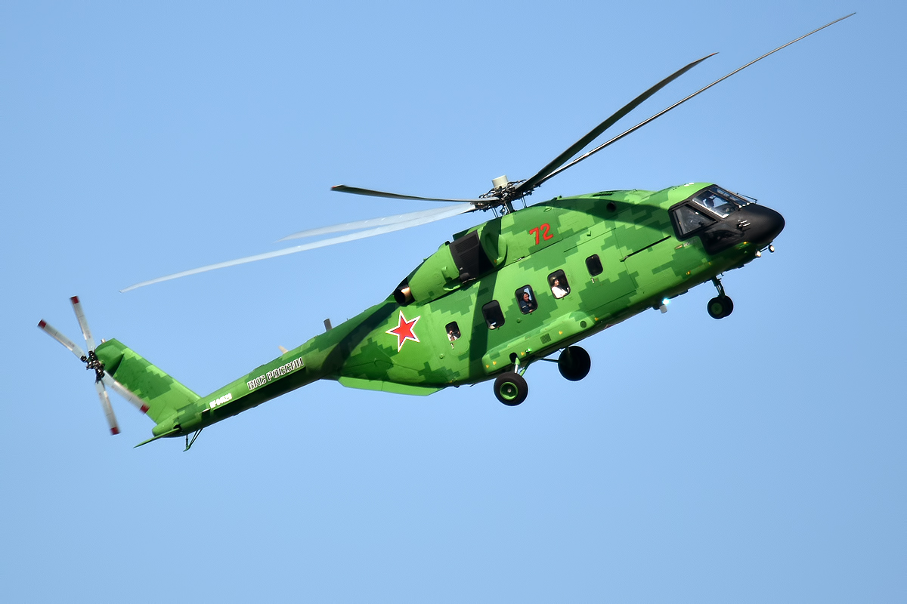

МИ-38
Многоцелевой вертолёт Ми-38 может применяться для перевозки грузов и пассажиров, в том числе VIP, использоваться в качестве поисково-спасательного вертолёта и летающей неотложки, для полётов над сушей и акваториями. Ми-38 имеет много прогрессивных особенностей (в частности: «стеклянная кабина» для двух пилотов и широкое использование композитных материалов, в том числе в несущем и хвостовом винтах). Государственная программа «Вертолёт Ми-38» финансируется правительством Российской Федерации[10].
Первоначальная[прояснить] двигательная установка состоит из двух турбовальных двигателей ТВ7-117В (разработан в ОАО «Климов») взлётной мощностью на валу 2800 л. с.[11], ранее разрабатывался вариант с двигателями PW127TS компании «Pratt & Whitney Canada»[12] взлётной мощностью по 2500 л. с.[13].
Разработано несколько вариантов Ми-38, включая военный вспомогательный и специальный, пассажирский на 32 пассажира, специализированный грузовой (с возможностью перевозки грузов на внешней тросовой подвеске), санитарный и вариант для воздушного наблюдения.
ТТХ:
- Экипаж: 2 чел.
- Пассажиров: 30 чел.
- Диаметр несущего винта: 21,1 м
- Диаметр рулевого винта: 3,84 м
- Длина с вращ. винтами: 25 м
- Длина фюзеляжа: 19,95 м
- Ширина фюзеляжа: 4,5 м
- Высота с вращ. винтами: 6,98 м
- Мощность на взлётном режиме: 2 × 2800 л. с.[35]
- Мощность на чрезвычайном режиме (30 сек.): 2 × 3140 л. с.[35]